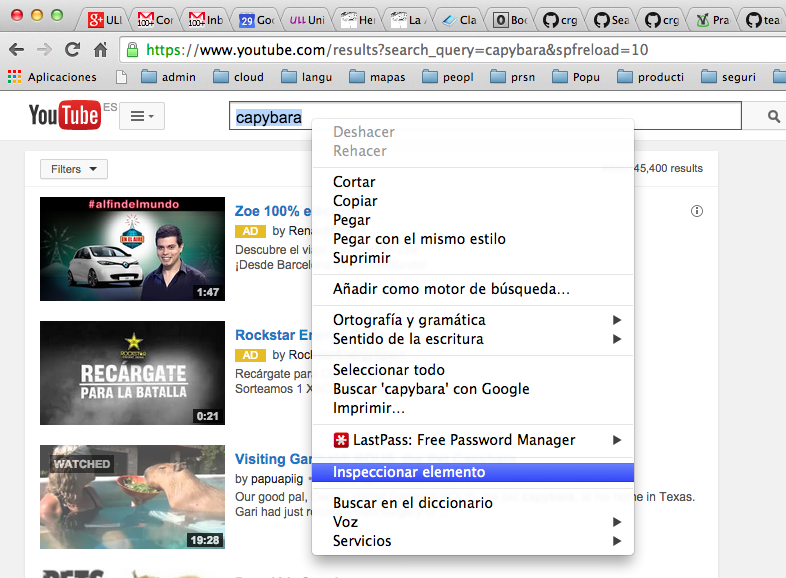
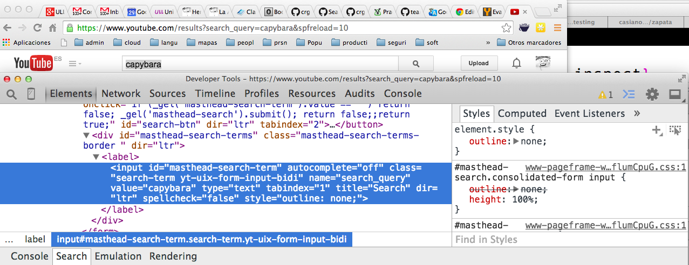
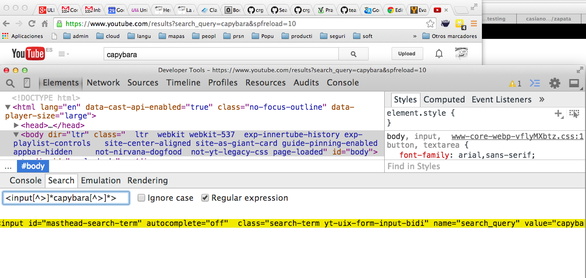

Siguiente: Clicks en Botones y Subir: La API de Capybara Anterior: La API de Capybara Índice General Índice de Materias
Capybara usa selectores CSS y consultas XPath para buscar en el árbol DOM18.2por contenido específico dentro de la página web.
Para buscar un elemento cuyo atributo id vale main:
//*[@id='main']
#main
<div> con clase container:
//div//*[@class='container']
div .container
Capyabara usa por defecto selectores CSS318.3:
page.find('#maincontent')
Si deseamos usar selectores XPath podemos explicitarlo en
la llamada al método:
page.find(:xpath, //*[@id="maincontent"])O podemos establecerlo globalmente - por ejemplo en el fichero
env.rb si estamos usando Cucumber:
require 'capybara/cucumber' Capybara.default_selector = :xpath Capybara.default_driver = :selenium
Nos situamos en la página sobre el elemento del que queremos información y pulsamos el botón de contexto. Elegimos inspeccionar elemento: 
Esto nos lleva a las herramientas del desarrollador mostrándonos la información sobre el elemento:

El panel Elements es a menudo la mejor forma de visualizar
el fuente de una página y navegar en la estructura de la página y del DOM.
Podemos tambien elegir un elemento y se verá resaltado en la página.
La búsqueda mediante expresiones regulares nos permite tambien hacer búsquedas en la página.

En Chrome podemos buscar por los elementos que casan con un xpath
usando $x("some_xpath")
y usando $$("css-selectors")
en la consola (Véase
Chrome Tips and Tricks).